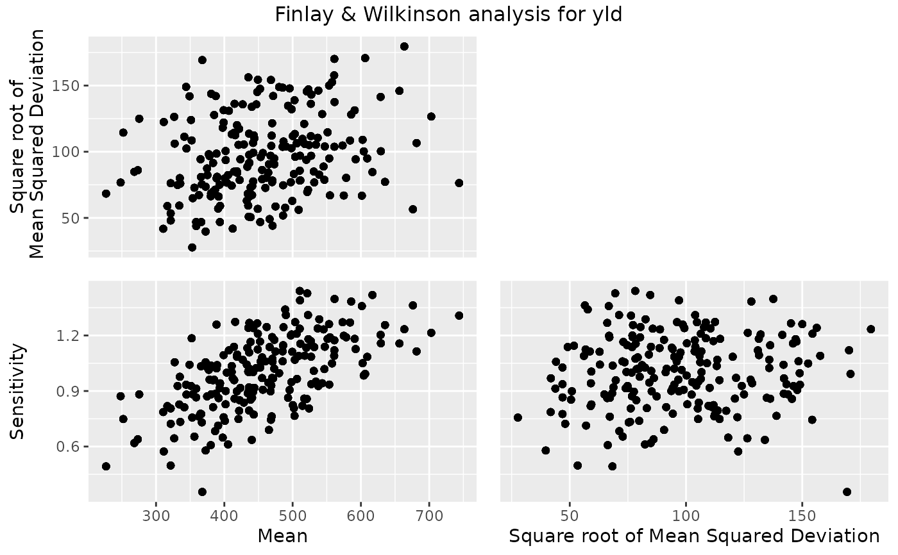

This function performs a Finlay-Wilkinson analysis of data classified by two factors.
Arguments
- TD
An object of class
TD.- trials
A character string specifying the trials to be analyzed. If not supplied, all trials are used in the analysis.
- trait
A character string specifying the trait to be analyzed.
- maxIter
An integer specifying the maximum number of iterations in the algorithm.
- tol
A positive numerical value specifying convergence tolerance of the algorithm.
- sorted
A character string specifying the sorting order of the estimated values in the output.
- genotypes
An optional character string containing the genotypes to which the analysis should be restricted. If
NULL, all genotypes are used.- useWt
Should weighting be used when modeling? Requires a column
wtinTD.
Value
An object of class FW, a list containing:
- estimates
A data.frame containing the estimated values, with the following columns:
genotype: The name of the genotype.
sens: The estimate of the sensitivity.
se_sens: The standard error of the estimate of the sensitivity.
genMean: The estimate of the genotypic mean.
se_genMean: The standard error of the estimate of the genotypic mean.
MSdeviation: The mean square deviation about the line fitted to each genotype
rank: The rank of the genotype based on its sensitivity.
- anova
A data.frame containing anova scores of the FW analysis.
- envEffs
A data.frame containing the environmental effects, with the following columns:
trial: The name of the trial.
envEff: The estimate of the environment effect.
se_envEff: The standard error of the estimate of the environment effect.
envMean: The estimate of the environment mean.
rank: The rank of the trial based on its mean.
- TD
The object of class TD on which the analysis was performed.
- fittedGeno
A numerical vector containing the fitted values for the genotypes.
- trait
A character string containing the analyzed trait.
- nGeno
A numerical value containing the number of genotypes in the analysis.
- nEnv
A numerical value containing the number of environments in the analysis.
- tol
A numerical value containing the tolerance used during the analysis.
- iter
A numerical value containing the number of iterations for the analysis to converge.
References
Finlay, K.W. & Wilkinson, G.N. (1963). The analysis of adaptation in a plant-breeding programme. Australian Journal of Agricultural Research, 14, 742-754.
See also
Other Finlay-Wilkinson:
fitted.FW(),
plot.FW(),
report.FW(),
residuals.FW()
Examples
## Run Finlay-Wilkinson analysis on TDMaize.
geFW <- gxeFw(TDMaize, trait = "yld")
## Summarize results.
summary(geFW)
#> Environmental effects
#> =====================
#> Trial EnvEff SE_EnvEff EnvMean SE_EnvMean Rank
#> 1 HN96b 25.60907 8.035738 481.78976 36.14586 3
#> 2 IS92a 182.25399 8.035738 638.43455 43.17100 2
#> 3 IS94a -35.03586 8.035738 421.14488 36.28094 4
#> 4 LN96a -270.99389 8.035738 185.18705 50.51774 7
#> 5 LN96b -364.58211 8.035738 91.59891 59.74921 8
#> 6 NS92a 595.20401 8.035738 1051.38422 85.77821 1
#> 7 SS92a -88.89550 8.035738 367.28528 37.82240 6
#> 8 SS94a -43.55972 8.035738 412.62103 36.43859 5
#>
#> Anova
#> =====
#> Df Sum Sq Mean Sq F value Pr(>F)
#> Trial 7 127771687 18253098 1753.1259 < 2.2e-16 ***
#> Genotype 210 13821018 65814 6.3212 < 2.2e-16 ***
#> Sensitivities 210 5178199 24658 2.3683 < 2.2e-16 ***
#> Residual 1260 13118797 10412
#> Total 1687 159889702 94778
#> ---
#> Signif. codes: 0 ‘***’ 0.001 ‘**’ 0.01 ‘*’ 0.05 ‘.’ 0.1 ‘ ’ 1
#>
#> Most sensitive genotypes
#> ========================
#> Genotype GenMean SE_GenMean Rank Sens SE_Sens MSdeviation
#> G091 510.4500 35.99027 1 1.440517 0.1308168 6109.574
#> G194 521.4250 35.99027 2 1.427586 0.1308168 4836.093
#> G055 616.8500 35.99027 3 1.418635 0.1308168 7160.220
#> G042 561.3875 35.99027 4 1.397186 0.1308168 18919.353
#> G103 510.8000 35.99027 5 1.389816 0.1308168 9408.329
## Create a scatterplot of the results.
plot(geFW, plotType = "scatter")

# \donttest{
## Create a report summarizing the results.
report(geFW, outfile = tempfile(fileext = ".pdf"))
#> Error in report.FW(geFW, outfile = tempfile(fileext = ".pdf")): An installation of LaTeX is required to create a pdf report.
# }